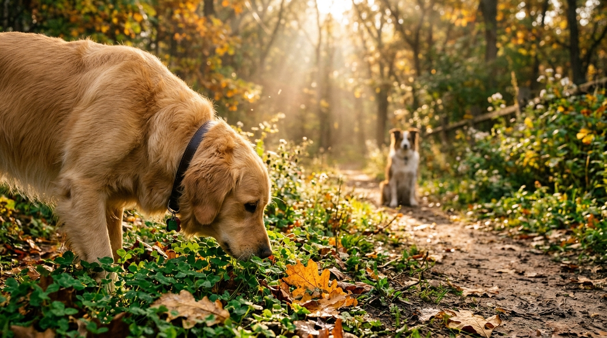

透過 50mm 貼地晨光電影級鏡頭語言 與 生物神經氣味圖譜解析，揭開散步中每一步嗅聞背後的大腦認知活化、皮質醇調節與高品質同伴社會化交互。

散步從踏出門前開始。透過穿戴胸背帶與熟悉門廊的環境氣味，引導狗狗進入穩定、好奇的探索狀態，降低外出初期的過度興奮，建立安全感基準線。
進入街道與人行道，利用高頻率但低壓力的環境刺激（車流聲、行人、街角氣味標記），讓狗狗以自主嗅聞節奏取代緊張警戒，完成基礎環境減敏。
轉入公園綠地與多層次植被路徑。濕潤土壤、落葉與其他犬隻留下的氣味訊息形成高維度資訊網，深度啟動大腦嗅球區，釋放壓力荷爾蒙並提升認知彈性。
在氣味探索獲得充分滿足後，透過微彎曲的平行散步路徑（Arc Walking）與同伴進行非壓迫式接觸，自然展現嗅聞、側身等安定訊號，完成高品質社會化體驗。
從貼地視角運鏡、主體動作、環境微塵到魔幻時刻光影規格，打造真實自然的極致沈浸感。
中文解析：貼地視角 50mm 慢動作特寫平移鏡頭。藉由貼近狗狗視線的低角度，賦予觀眾第一人稱探索的沈浸感；50mm 接近人眼自然透視，慢動作平移使畫面充滿沉穩呼吸感。
中文解析：黃金獵犬平靜地嗅聞野生酢漿草與橡樹落葉，背景淺景深處有一隻友善的邊境牧羊犬並行。建立前後景深對照，體現嗅聞滿足後的和諧平行社交。
中文解析：陽光斑駁的社區植物步道，濕潤土壤上方的晨霧，空氣中漂浮著微塵與花粉。細節描寫賦予氣味分子可視化的光影載體，增添自然生態厚度。
中文解析：溫暖魔幻時刻逆光、豐富自然調色、高動態範圍，RED V-Raptor 拍攝，電影感 4K，24幀。鎖定頂級電影機規格與黃金邊緣輪廓光，消除數位廉價感。
來源：放線菌分泌物，散佈於晨霧濕潤之泥土與落葉堆中。
機制：極低濃度（0.001 ppb）即可觸發前腦基底核，大幅抑制交感神經。
行為：引導犬隻放緩腳步，進入全神貫注的心流狀態（Flow State）。